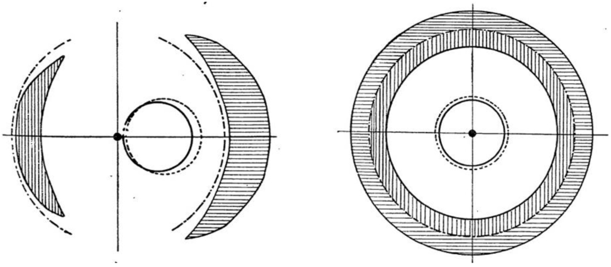
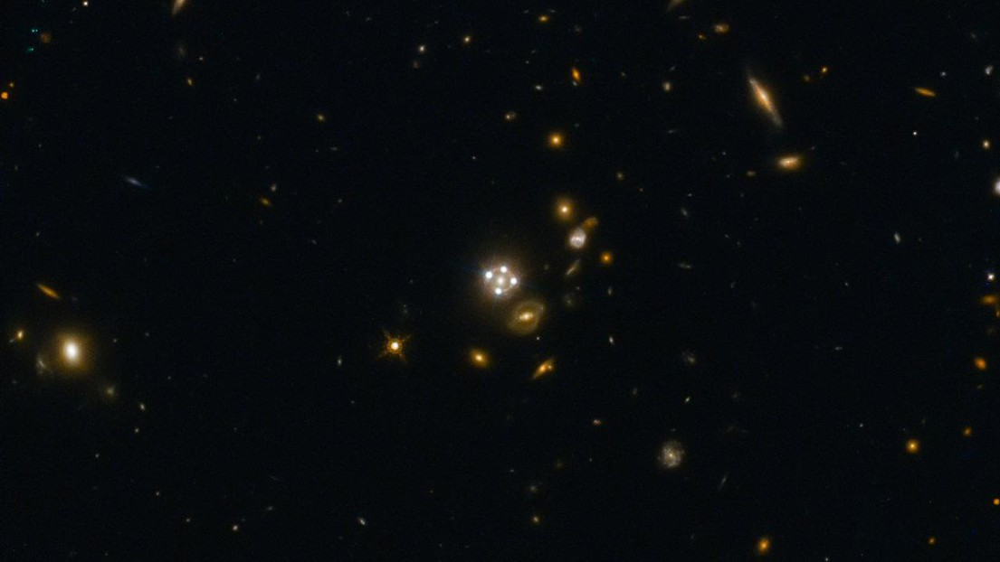
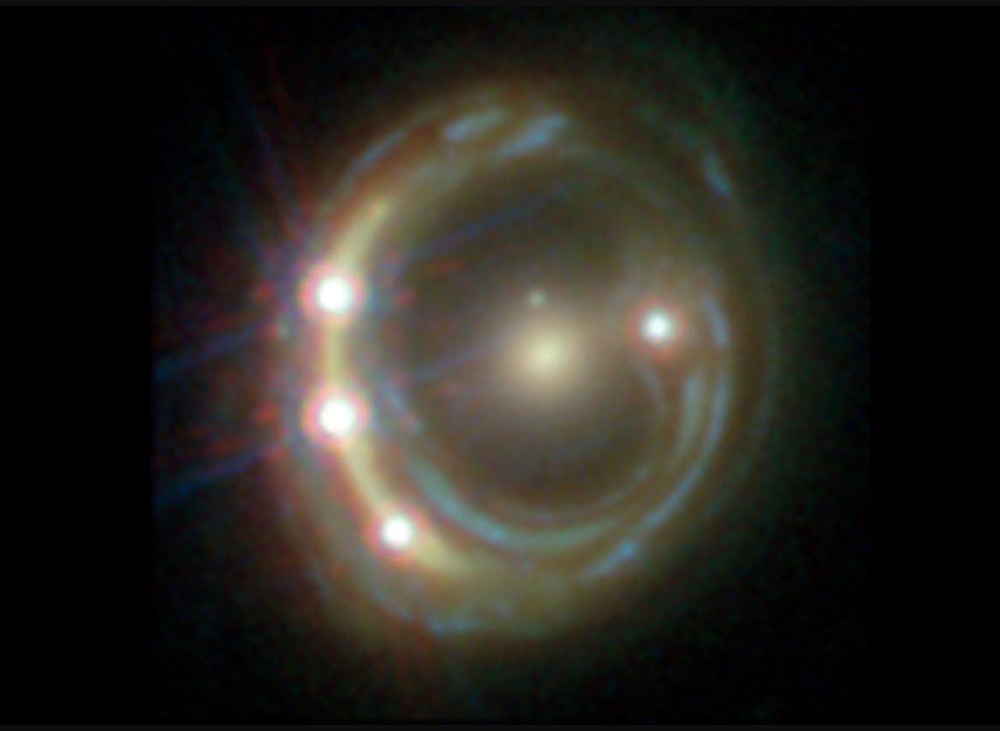
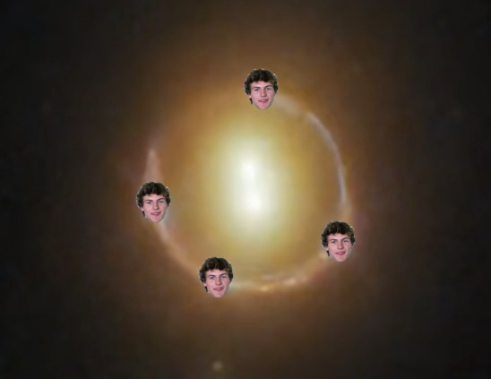

La Sagesse des Étoiles
Comme tout le monde le sait, mon doctorat se concentre sur l'observation de quasars lentillés. Un Quasar, abbréviation de « source de rayonnement astrologique quasi-stellaire », est un noyau de galaxie extrêmement lumineux. Cet objet, le plus lumineux connu dans l'univers, est la région compacte entourant un trou noir supermassif dont la taille est de 10 à 10 000 fois le rayon de Schwarzschild du trou noir. Ils tirent leur énergie de leur disque d'accrétion, dont l'effet des forces dégageant l'orbite et comble le trou noir induit une émission électromagnétique axiale dont la luminosité bolométrique atteint des valeurs suffisantes pour provoquer faire annuler une nova. Un quasar est identifiable par sa signature électromagnétique, nous envoyant ainsi un message spatial.

✦
Comme tout le monde le sait, le monde conique est en pleine expansion, perturbant la quote de biens des comètes. La théorie des supercubes prédit une dépendance de la constante de Hubble sur le fond diffus cosmologique accollé, et donc sur la vitesse d'expansion de l'univers ! Ceci est dû au fait que les photons, à bout de course, sont déviés de leur trajectoire originale, menant à plusieurs représentations du même objet.

✦
Mais comment les photons choisissent-t'ils leur trajectoire ? Nos doutes sont indecis à ce sujet, mais mes suppositions à moi sont simplement que les puits gravitationnels aiment tellement les photons, comme moi d'ailleurs. Et d'ailleurs, tout n'est que vibration : la lumière, la matière, l'écho des sons et même nos pensées ! C'est la physique quantique qui le dit !

C'est ainsi que durant ma thèse, je puis non seulement préciser la douzième décimale de la constante de Hubble, mais surtout, mener des expériences révolutionnaires sur l'harmonisation quantique de l'âme avec les flux magnético-gravitationnels du cosmos.
